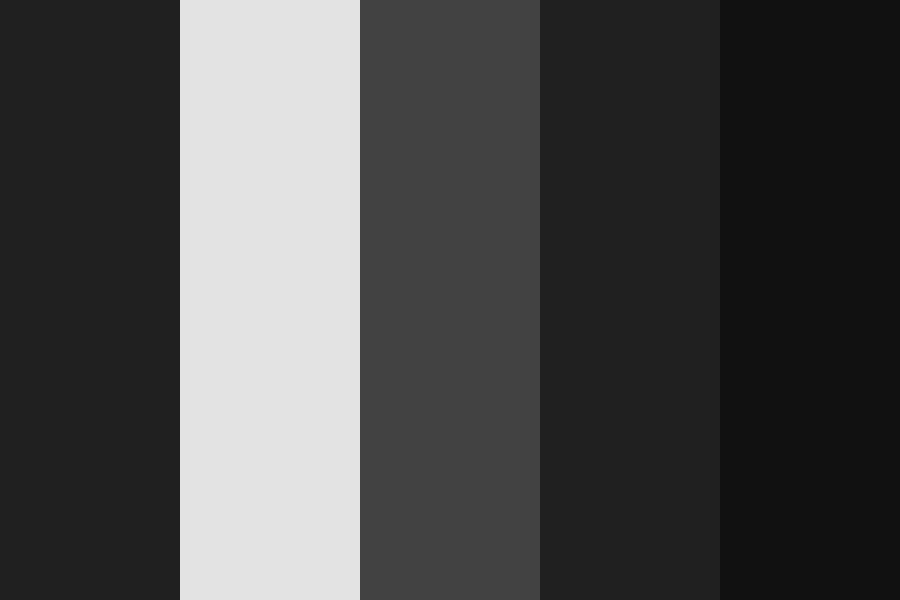

Website Style Guide!
This small section is to showcase the general colour pallete I wanted for this blogsite and provide some reasoning behind some design decisions.
In general I wanted this website to have a minimalist aesthetic, similar to websites I enjoy. These sites generally have simple and clean menus and forms of navigation and do not bombard you with information, mainly focusing on what is essential (or meant to be focused on). By using these sites as inspiration I designed the layout to be relatively simple, focusing mainly on the content with a simple navigation bar that is present on all pages.
Due to wanting a minimalist style and aesthetic, I had to choose a colour scheme that matched that vibe. This is mainly done with a mixture of blacks, whites and greys to provide a simple and clean user interface, matching the minimalist aesthetic. However, I do want there to be some splashes of colour to break away from the monotony. This would be done with the different thumbnails for blogs or images found across the site (these images should not be too bright or contrasting and partially remain minimalist)
The colour pallete I finally chose for the site is called "Minimal: Black Tie" and can be found below
This colour pallete matched what I wanted exactly by not only using plain old black; white; and grey, but also provides gradients inbetween that I can use to style the site effectively.
The styling and decisions made are subject to change however as progress is made. This would be done through the colour scheme and layout as the minimalist aesthetic will remain as the core and backbone of the design!